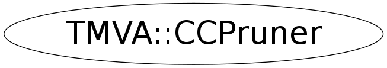

Function Members (Methods)
public:
| ~CCPruner() | |
| TMVA::CCPruner | CCPruner(const TMVA::CCPruner&) |
| TMVA::CCPruner | CCPruner(TMVA::DecisionTree* t_max, const TMVA::CCPruner::EventList* validationSample, TMVA::SeparationBase* qualityIndex = NULL) |
| TMVA::CCPruner | CCPruner(TMVA::DecisionTree* t_max, const TMVA::DataSet* validationSample, TMVA::SeparationBase* qualityIndex = NULL) |
| vector<TMVA::DecisionTreeNode*> | GetOptimalPruneSequence() const |
| Float_t | GetOptimalPruneStrength() const |
| Float_t | GetOptimalQualityIndex() const |
| void | Optimize() |
| void | SetPruneStrength(Float_t alpha = -1.0) |
Data Members
private:
| Float_t | fAlpha | ! regularization parameter in CC pruning |
| Bool_t | fDebug | ! debug flag |
| Int_t | fOptimalK | ! index of the optimal tree in the pruned tree sequence |
| Bool_t | fOwnQIndex | ! flag indicates if fQualityIndex is owned by this |
| vector<TMVA::DecisionTreeNode*> | fPruneSequence | ! map of weakest links (i.e., branches to prune) -> pruning index |
| vector<Float_t> | fPruneStrengthList | ! map of alpha -> pruning index |
| TMVA::SeparationBase* | fQualityIndex | ! the quality index used to calculate R(t), R(T) = sum[t in ~T]{ R(t) } |
| vector<Float_t> | fQualityIndexList | ! map of R(T) -> pruning index |
| TMVA::DecisionTree* | fTree | ! (pruned) decision tree |
| const TMVA::DataSet* | fValidationDataSet | ! the event sample to select the optimally-pruned tree |
| const TMVA::CCPruner::EventList* | fValidationSample | ! the event sample to select the optimally-pruned tree |
Class Charts
{kind=link}
{kind=link}
{kind=link}
{kind=link}

Function documentation
CCPruner( DecisionTree* t_max, const EventList* validationSample, SeparationBase* qualityIndex )
constructor
CCPruner( DecisionTree* t_max, const DataSet* validationSample, SeparationBase* qualityIndex )
constructor
std::vector<DecisionTreeNode*> GetOptimalPruneSequence() const
return the prune strength (=alpha) corresponding to the prune sequence
void SetPruneStrength(Float_t alpha = -1.0)
CCPruner( DecisionTree* t_max, const EventList* validationSample, SeparationBase* qualityIndex = NULL )
Float_t GetOptimalQualityIndex() const
return the quality index from the validation sample for the optimal subtree T'
Float_t GetOptimalPruneStrength() const
return the prune strength (=alpha) corresponding to the prune sequence